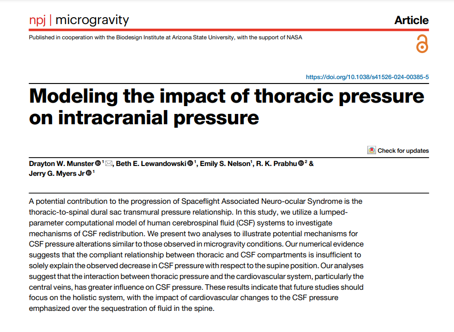

SciPipe used at NASA Glenn Research Center

I was happy to see the publication finally going online , of work done at NASA Glenn Research Center , where SciPipe has been used to process and track provenance of the analyses, “Modeling the impact of thoracic pressure on intracranial pressure”. I’ve known the work existed for a couple of years, after getting some extraordinarily useful contributions from Drayton fixing some bugs I’m not sure I’d ever find otherwise, but cool to now also see it published! Also a big kudos for acknowledging the tool in the paper. Not all that common to do, but a gesture that is deeply appreciated.Also, the research done looks super cool. Congrats Drayton & team on the paper!
Munster, D.W., Lewandowski, B.E., Nelson, E.S. et al. Modeling the impact of thoracic pressure on intracranial pressure. npj Microgravity 10, 46 (2024). https://doi.org/10.1038/s41526-024-00385-5